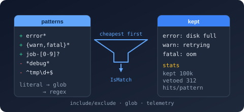

Bodu.Text.Filtering

Bodu.Text.Filtering filters lists of text values through include/exclude pattern sets. Glob
(wildcard) and regular-expression patterns compile once into an immutable
TextFilter that is then applied to any number of values —
designed for bulk work in the 100k+ values × 10–100+ patterns range, with built-in telemetry that
reports what matched, what was vetoed, and by which pattern.
Part of the Text & Serialization topic.
Core mental model
A filter is a compiled set of rules. Each rule is a
TextFilterPattern: a pattern text, an action
(include or exclude), a kind (glob or regex), and an optional per-pattern case override. You
compile the set once — with TextFilter.Build, TextFilter.Parse, or a
TextFilterBuilder — and then ask it questions:
IsMatch(value), Evaluate(value) (which also reports the deciding pattern), or
Filter(sequence).
The library deliberately adopts designs users already know from established tools:
| Borrowed design | Source |
|---|---|
| Unordered include/exclude sets; empty includes ⇒ include-all; excludes veto | Ant, MSBuild globs, Microsoft.Extensions.FileSystemGlobbing |
Ordered rules where the last matching rule wins, ! negation, # comments |
gitignore / ESLint ignore files |
| Compile many patterns at once; run cheap literal/prefix strategies before regex; report which patterns matched | Rust globset (ripgrep) |
Fluent builder (AddInclude / AddExclude) over a compiled matcher |
Microsoft.Extensions.FileSystemGlobbing.Matcher |
Glob grammar: *, ?, [abc] / [!abc], {a,b}, \ escape |
Java PathMatcher, minimatch, shell glob |
The two evaluation modes
TextFilterEvaluationMode selects how rules
combine:
AnyMatch(default) — the Ant / MSBuild set model. A value is accepted when the include set is empty or at least one include matches, and no exclude matches. Declaration order never affects the outcome, which frees the engine to evaluate the cheapest patterns first.LastMatchWins— the gitignore model. Rules form one ordered list; the last matching rule's action decides, and unmatched values are included. A later include re-admits what an earlier exclude rejected; allowlists start with an exclude-everything rule (!*).
Glob grammar
Globs match the whole value (use *abc* for contains). Comparison is ordinal and
case-insensitive by default.
| Syntax | Meaning |
|---|---|
* |
zero or more characters |
? |
exactly one character |
[abc], [a-z] |
one character from a set / range |
[!abc] |
one character not in the set |
{a,b} |
alternation, expanded at build time |
\x |
literal x (escapes metacharacters) |
Anything richer is a TextFilterPatternKind.Regex pattern — compiled preferring the linear-time
NonBacktracking engine, always with a match timeout, and timeouts fail safe (a timed-out exclude
still vetoes).
Cost tiers
At build time every glob is classified into the cheapest strategy its shape permits and each group is evaluated cheapest-first with short-circuiting:
* (match-all) → literal equality → prefix / suffix (abc*, *abc, abc*def) → contains
(*abc*) → general wildcard matcher → regex.
{error,warn}* expands at build time into two cheap prefix matchers — alternation costs nothing at
evaluation time.
Main types
The engine
TextFilter—Build/Parse,IsMatch,Evaluate,GetMatchingPatterns,Filter/FilterToList,GetStatistics,Observer.TextFilterBuilder— fluentAddInclude/AddExclude/AddIncludeRegex/AddParsed.
The model
TextFilterPattern,TextFilterAction,TextFilterPatternKindTextFilterOptions,TextFilterEvaluationModeTextFilterResult,TextFilterDecision
Telemetry
Common scenarios
- Log/line selection — keep
error*/warn*lines, veto*debug*noise, stream throughFilter. - Name allowlists and blocklists — parse a config file's raw lines with the gitignore conventions.
- Routing and diagnostics —
Evaluatereports the deciding pattern;GetMatchingPatternsreports every matching pattern. - Filter tuning — per-pattern hit counts show which patterns actually decide outcomes at volume.
Where to go next
- Core concepts — the vocabulary: actions, kinds, modes, tiers, deciding patterns.
- Getting started — install and minimal samples.
- Guides — pattern grammar, evaluation modes, telemetry.
- Runnable samples — the FilteringTour console sample.
- API reference — full type-by-type docs.